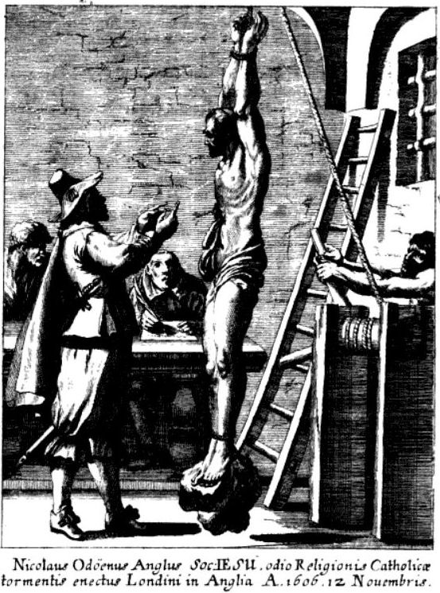

Mučenici iz Engleske i Walesa (10 svetaca)
Brat laik · Obrtnik · Mučenik
Sv. Nikola Owen
1550. – 1606.
Svojim stolarskim umijećem gradio je skrovišta za progonjene svećenike u kućama engleskih katolika. Isusovački brat čuvao je ljude i njihova imena, ostavši vjeran toj skrovitoj službi i tijekom mučenja u Toweru.

Izvor slike
- Spomendan
- 22. ožujka
- Zaštitništvo
- Nije navedeno u izvoru
- Životni vijek
- 1550. – 1606.
- Djelovanje
- Svakodnevni rad i skrovita služba · Progoni i progonstvo · Mučeništvo
- Razdoblje
- 16., 17. stoljeće
- Slavi se
- 22. ožujka
Životopis
Sveti Nikola Owen gradio je prostore u kojima su progonjeni svećenici mogli ostati neotkriveni. U kućama engleskih katolika njegov je stolarski zanat stvarao posljednje utočište pred pretragom i uhićenjem. Bio je isusovački brat laik, čovjek molitve i rada, čija je služba velikim dijelom morala ostati skrivena. Kad je naposljetku dospio u londonski Tower, od njega su tražili ono što je godinama čuvao: imena ljudi i mjesta koja su ovisila o njegovoj šutnji.
Rođen je u Oxfordu, vjerojatno oko 1562. godine. Odrastao je u katoličkoj obitelji u vrijeme kad je vjerski raskol u Engleskoj već duboko promijenio život Crkve. Otac Walter bio je stolar, a Nikola je izučio isti zanat. Dvojica njegove braće postala su svećenici. Znanje koje je stekao kao mladi obrtnik poslije je primijenio u posve osobitim okolnostima: trebalo je prepoznati prostor koji drugi neće opaziti i urediti ga tako da u njemu čovjek može preživjeti pretragu.
Za vladavine Elizabete I., a potom i Jakova I., katolička je pastoralna služba djelovala pod teškim zakonskim ograničenjima. Svećenici su se morali kretati potajno, a obitelji koje su ih primale izlagale su se ozbiljnoj opasnosti. Dom je mogao postati mjesto mise, ispovijedi i okupljanja vjernika, ali i predmet pretresa. Owenov je posao bio izravno povezan s tim potrebama. Sigurno skrovište omogućavalo je svećeniku da nakon odlaska istražitelja ponovno nastavi služiti ljudima koji su ga čekali.
U mladosti je bio povezan sa svetim Edmundom Campionom. Nakon Campionove osude i pogubljenja i sam je bio uhićen jer je branio njegovu nevinost. Potom je surađivao s isusovcem Henryjem Garnetom, jednim od poglavara engleske misije. Pridružio se Družbi Isusovoj kao brat laik. Točan datum njegova ulaska nije poznat, a teške prilike i potreba za prikrivanjem djelovanja nisu dopuštale uobičajen redovnički život. Njegova je pripadnost Družbi bila povezana sa službom koju je već obavljao među ugroženim katolicima.
Brat Nikola nije bio svećenik. Njegov se doprinos misiji ostvarivao stolarskim i građevinskim radom, putovanjima i povjerenjem koje je stjecao među domaćinima. Od kuće do kuće nosio je vještinu potrebnu za uređenje skrovitih prostora. Za uzdržavanje je prihvaćao ono najnužnije, a zatim nastavljao dalje. Bio je malen rastom i poznat pod nadimkom Mali Ivan. Premda mu je noga bila ozlijeđena, godinama je obavljao fizički zahtjevne poslove koji su tražili strpljenje, spretnost i preciznost.
Danju je radio uobičajene obrtničke poslove, dok je tajne zahvate izvodio tako da privuče što manje pozornosti. Položaj skrovišta morao je biti poznat vrlo malom broju ljudi. Zato je velik dio posla obavljao sam. Takva je diskrecija štitila i buduće korisnike prostora i vlasnike kuće. Njegovo je umijeće obuhvaćalo više od izrade skrivenih vrata: trebalo je iskoristiti raspored građevine, razmake među pregradama i druge teško uočljive dijelove kuće te prikriti tragove obavljenoga rada.
Među njegovim su rješenjima bila i dvostruka skrovišta. Vanjski prostor, koji se mogao lakše otkriti, skrivao je pristup drugomu. Pretraživači su tako mogli pomisliti da su pronašli tajnu kuće dok se netko još skrivao dublje u njezinoj unutrašnjosti. Owen je promišljao kako će prostor izgledati onome tko ga traži, a ne samo onome tko ga gradi. O ishodu takva rada mogla je ovisiti sloboda ili život ljudi koje graditelj često nije mogao javno ni imenovati.
Uz engleske povijesne kuće sačuvana je uspomena na brojna takva skrovišta. Neka se pripisuju Owenu prema načinu izvedbe, ali nije za svako moguće pouzdano utvrditi autora. Harvington Hall osobito čuva tragove njegova umijeća: skrovišta uz veliko stubište povezuju se s njim na temelju njihovih konstrukcijskih obilježja. Ta građevinska baština približava okolnosti njegove službe. Prostori koji danas pobuđuju zanimanje posjetitelja nekoć su nastajali za ljude koji su morali nestati iz vidokruga tijekom potrage.
U njegovu je radu veliko mjesto imala molitva. Prije početka izrade skrovišta pristupao je euharistiji, a tijekom dugoga i opasnoga posla obraćao se Bogu. Njegovi životopisci povezuju tu pobožnost s postojanošću kojom je podnosio napore i rizik. Rad je obavljao u okolnostima u kojima je pogreška mogla ugroziti više ljudi. U takvu su se svakodnevnom služenju susretali njegova stručnost, redovnička vjernost i briga da svećenici mogu nastaviti dijeliti sakramente vjernicima.
Godine 1594. ponovno je uhićen. Tadašnje zatočenje nije trajno prekinulo njegovu djelatnost: katolici su pribavili novac za njegovo oslobađanje, a vlasti još nisu potpuno shvaćale njegovu ulogu. Kad je izašao na slobodu, vratio se radu. Sudjelovao je i u pripremi bijega isusovca Johna Gerarda iz londonskoga Towera 1597. Njegova se služba tako protezala od gradnje skloništa do pomoći zatočenima, uvijek uz potrebu da se zaštite oni koji su sudjelovali u pothvatu.
Posljednje uhićenje dogodilo se početkom 1606. u Hindlip Hallu, u Worcestershireu. Nakon Barutne zavjere prethodne godine potraga za isusovcima i drugim katolicima dodatno se pojačala. Taj politički kontekst ne znači da je Owen sudjelovao u zavjeri. U Hindlipu se s drugim isusovačkim bratom, Ralphom Ashleyjem, skrivao nekoliko dana uz vrlo malo hrane. Naposljetku su izašli iz skrovišta i bili uhvaćeni. Ovaj su put vlasti prepoznale da imaju čovjeka koji zna mnogo o tajnoj mreži katoličke misije.
Najprije je bio zatvoren u Marshalseaju, a zatim odveden u Tower. Ispitivače su zanimali svećenici, njihovi domaćini i skrovišta koja je izradio. Nikola je podvrgnut teškom mučenju, ali nije otkrio tražene podatke. Njegova se dugogodišnja odgovornost prema povjerenim ljudima nastavila i u zatvoru. Ranije ih je štitio pažljivo izrađenim pregradama i skrivenim ulazima; sada je njihove živote čuvao odbijanjem da ih oda. Umro je od posljedica mučenja početkom ožujka 1606., u londonskom Toweru.
Nakon njegove smrti proširena je tvrdnja da je počinio samoubojstvo. Svjedočanstva o njegovu zatočenju i stradanju sačuvala su drukčiju uspomenu: brat koji je spašavao druge ostao je vjeran svojoj službi do smrti. John Gerard ubrajao ga je među ljude koji su učinili iznimno mnogo za opstanak katoličkoga života u Engleskoj. Posljedice Owenova rada nadilazile su pojedinu kuću jer je spašeni svećenik mogao ponovno pohoditi mnoge vjernike i obitelji.
Papa Pavao VI. proglasio ga je svetim 25. listopada 1970. među Četrdesetoricom mučenika Engleske i Walesa. Njegov je osobni spomendan 22. ožujka. U sjećanju Crkve ostao je kao brat i obrtnik koji je svoje sposobnosti stavio na raspolaganje ljudima u nevolji. Njegova je ostavština u sačuvanim skrovištima, ali i u povjerenju koje nije iznevjerio: godinama je pažljivo radio za sigurnost drugih, a u posljednjoj je kušnji odbio njihovu slobodu platiti vlastitim olakšanjem.
Pročitaj više na izvornoj stranici ↗